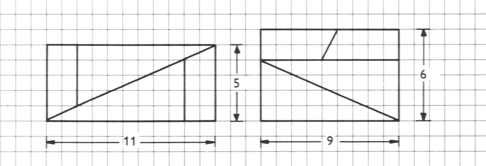
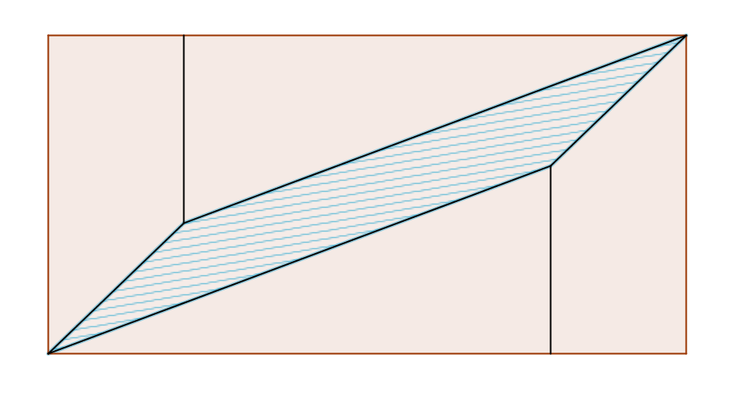

Aufgabe 6.6
Gemäss Zeichnung sind die beiden Rechtecke zerlegungsgleich. Dagegen sind die Masszahlen ihrer Inhalte verschieden. Was stimmt?

- Prüfen Sie die Steigungen der «Diagonalen» genau
- Liegen alle Punkte wirklich auf einer Geraden?
- Zeichnen Sie die Figur massstabsgetreu nach
- Wo könnte sich versteckte Fläche befinden?
Auflösung des scheinbaren Paradoxons:
Die beiden Rechtecke sind NICHT zerlegungsgleich! Der Fehler liegt in der ungenauen Zeichnung.
Analyse der Steigungen:
Betrachten wir die Steigungen der vermeintlichen «Diagonalen»:

- Steigung im Trapez: $m_1 = \frac{-1}{2} = -0.5$
- Steigung im Dreieck: $m_2 = \frac{-4}{9} \approx -0.444$
Die Steigungen sind UNTERSCHIEDLICH! Die Teile liegen nicht auf einer Geraden.
Der versteckte Flächeninhalt:
Zwischen den beiden «Diagonalen» entsteht ein schmaler Zwischenraum in Form eines sehr flachen Parallelogramms.
Berechnung des Zwischenraums:
- Fläche des «5×13-Rechtecks»: $5 \times 13 = 65$
- Fläche des «8×8-Quadrats»: $8 \times 8 = 64$
- Differenz: $65 - 64 = 1$ Flächeneinheit
Lehre:
- Optische Täuschungen können in der Geometrie auftreten
- Exakte Berechnungen sind unerlässlich
- «Ungefähr gerade» ist nicht «gerade»
- Kleine Winkelunterschiede können grosse Auswirkungen haben
Im Video: Etappe 6 · Das Ergänzungsprinzip bei 4:43